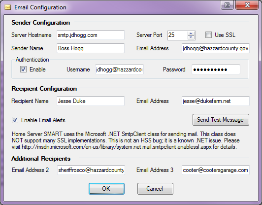
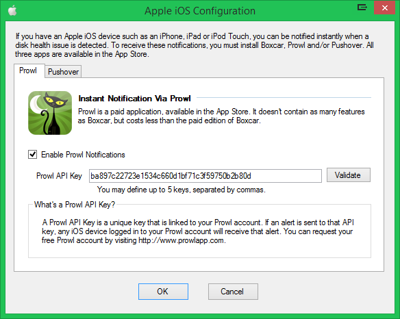
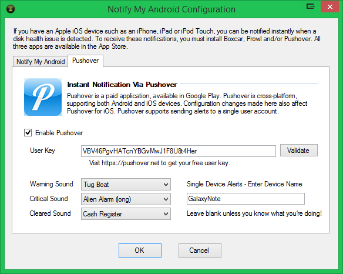
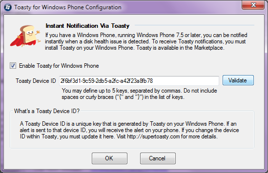
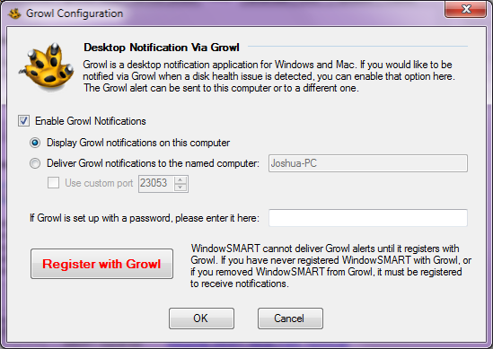
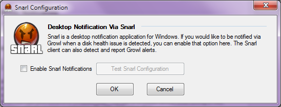

Remote Notification
WindowSMART 2015 provides several means of notifying you remotely of disk health problems. Since it is impossible to be in front of your computer all the time watching the UI, you can have notifications sent if a problem is detected. It is a good practice to periodically check the UI for changes, since not every change on a disk warrants a notification; while bad sectors or end-to-end errors will generate alerts, items such as high fly writes or power cycle counts will not.
You can choose to be notified via email, Prowl and/or Notify My Android. You can enable as many or as few notifications as you'd like. If you have iOS and Android phones, and want to receive alerts on all of them, in addition to email, you can do so. All of these notification features require Internet access; if your computer does not have an Internet connection, you will not be able to send these alerts. Corporate users behind a firewall may be able to point the email notifications at an internal email server in order to receive them.
Remote alerts are processed independently by each service: email, Prowl and NMA. This means if a problem is detected sending an email, for example, it will not affect the ability to send a Prowl or NMA alert.
Alerts can be configured in WindowSMART 2015 Settings, on the Notify tab.
Email Alerts
Email alerts can be configured by all users and are not dependent on having a specific device. All you need to know is the name or IP address of your email provider's SMTP server. In most cases, you will also need a username and password.

You must specify at least one recipient in order to send an email alert; however, you can send email alerts to up to three people.
WindowSMART supports email SSL. However, the SSL implementation is provided through the Microsoft .NET Framework, specifically through a class called SmtpClient. This class does not work correctly in many SSL implementations. This is not a bug with WindowSMART, but rather a known issue with the .NET Framework. Microsoft has an article published on this issue. Please visit http://msdn.microsoft.com/en-us/library/system.net.mail.smtpclient.enablessl.aspx for more information. If you cannot send email using SSL, try sending the email without SSL and see if that works.
Disclosure Statement
WindowSMART 2015 and Home Server SMART 2012 interface with a wide variety of third party tools like Pushover, Prowl, Notify My Android, Growl and Snarl. Some of these are applications for which you must pay a fee before you can use them.
Dojo North Software makes these services available for you as a convenience. We do NOT receive any revenue, payments, gifts, royalties or kickbacks from any of these providers. Furthermore, we possess no financial interest or securities in any of these companies or providers.
Pushover, Prowl, Notify My Android and Toasty Alerts
Pushover is available for both Apple iOS and Android. Prowl is an iOS client. Prowl was originally designed to interact with the Growl desktop client, an alerting application for Mac and PC. The Prowl API, however, is public, so applications and services can interact directly with Prowl web services to send remote notifications. Pushover also makes a public API available, and is an app that can receive alerts from a variety of sources. Boxcar has more features than Prowl, including the ability to include icons in alerts, so WindowSMART can provide a graphical representation of an alert's severity.
Notify My Android, or NMA, is an Android client that runs on most Android device capable of running Android, including Ice Cream Sandwich and Kitkat. Both mobile phones and tablets are supported, and this includes unofficial Android mods such as Cyanogen (mod) that runs on devices such as the HP TouchPad. Like Prowl, the NMA API is public and applications and services can interact directly with public NMA web services to send notifications.
Toasty is a Windows Phone client that runs on any Windows Phone running Windows Phone version 7.5 or later. Like Boxcar, Prowl and NMA, the Toasty API is public. Toasty, like Boxcar, supports the use of icons in alerts, so WindowSMART can provide a graphic to represent an alert's severity in the delivery of a Toasty alert.
Pushover and Prowl are available in the Apple App Store, and Pushover and Notify My Android is available on Google Play. There is a small fee for Prowl and NMA. Boxcar is available for free as an ad-supported app, but through an in-app purchase can be upgraded to disable advertisements. The Prowl and NMA APIs used by WindowSMART 2015 were written by Casey Watson, et al, and are open source, freely available online.
In order to use Prowl, you must first sign up for a free Prowl account at http://www.prowlapp.com. In order to use NMA, you must first sign up for a free Notify My Android account at http://nma.usk.bz. Boxcar also requires an account, for which you register directly within the app itself. Log into the respective client(s) on your mobile device(s).
Once you have a Prowl and/or NMA account, you need to request an API Key. You are allowed to request an unlimited number of keys for either (or both), and many folks who receive Prowl or NMA notifications from multiple different sources will typically request an API key for each source. An API key is a string consisting of 48 hexadecimal digits (0-9, A-F).
Pushover, like both Prowl and NMA, requires you to create an account. You are then able to create application keys, which can be used to set in WindowSMART 2015. Pushover also allows you to send alerts to specific devices. WindowSMART 2015 supports Pushover's device targeting.
Toasty generates a unique Device ID on your phone -- this is a Toasty-generated GUID and is not the phone's actual device ID. You do not need to register for an account. Simply install the app on your phone and it'll generate a device ID for you. This device ID is registered with Toasty automatically, so you can send alerts to it. The easiest way to get the device ID into WindowSMART is to use Toasty's built-in mail feature that allows you to mail the device ID to yourself. Then just copy and paste the device ID into WindowSMART.
To enable Boxcar, Prowl, NMA and Toasty alerts, select the alert you want to have notify you, check the Enable box and then paste in the email address, API key or device ID. Click the Validate button to validate the corretness of the ID, and then you will be given an option to send a test alert to verify your setup.



Note that if you have Pushover, Prowl and/or NMA on multiple devices logged into the same account (i.e. Prowl on an iPhone, Pushover on iPad and iPod Touch or NMA on a Droid Razr and an HP TouchPad), and an alert is generated, it will be received on ALL of those devices. This will not happen with Toasty, since each device receives its own unique Device ID. Of course, if you set up WindowSMART to alert all of your device IDs, the alert will show up on all of them.
Using Pushover, Prowl, Notify My Android and Toasty for Multiple Recipients
Prowl, Notify My Android (NMA) and Toasty support sending notifications to multiple recipients at one time. This is useful for situations where multiple members of a family or several employees at a business have mobile devices, each with their own API keys. Both Prowl and NMA API keys have the same construct (48 hexadecimal digits), and you can send alerts to up to five (5) of each recipient (5 x Prowl, 5 x NMA).
To send multiple Prowl and/or NMA notifications, enter the API keys into the Prowl or NMA API Key field, separating them by commas. Do not include any spaces between them. Toasty device IDs get entered into the Device ID field, separated by commas. Do not include spaces. You can click the Validate button to verify syntactic correctness and send a test alert.
Pushover's API only allows sending an alert to a single API key, which normally means only a single user can be notified. It is possible, of course, to set up a single Pushover account and have multiple end user devices logged in to that account, in which case multiple users can be notified via Pushover. The biggest advantage of Pushover is it is cross-platform with both Apple iOS and Android, two of the most popular mobile platforms. Many users use both Apple and Android devices, which can make using Pushover very appealing to them.
Between email alerting, Pushover, Prowl and NMA, it is theoretically possible to notify up to 13 individual recipients at the same time. That number can be higher if the destination email addresses are distribution lists. Toasty increases alerting up to a theoretically unlimited number of recipients.
Growl and Snarl Desktop Clients
Growl and Snarl are desktop applications which are designed with one thing in mind: desktop notifications. The original Growl client was designed for Mac, but there is also a Windows counterpart named Growl for Windows. Snarl runs only on Windows, but is capable of capturing and displaying Growl alerts.
WindowSMART allows you to send Growl alerts to the local machine, if a Growl client is running there, or to a remote machine. The remote machine can be a Mac, if desired. Snarl alerts can be sent to the local machine only.
WindowSMART must be registered with Growl first, whether remote or local. Alerts will not be displayed until you register with Growl. If you change the target, port or password, you must re-register. Snarl doesn't require you to manually register; WindowSMART registers and un-registers automatically.

